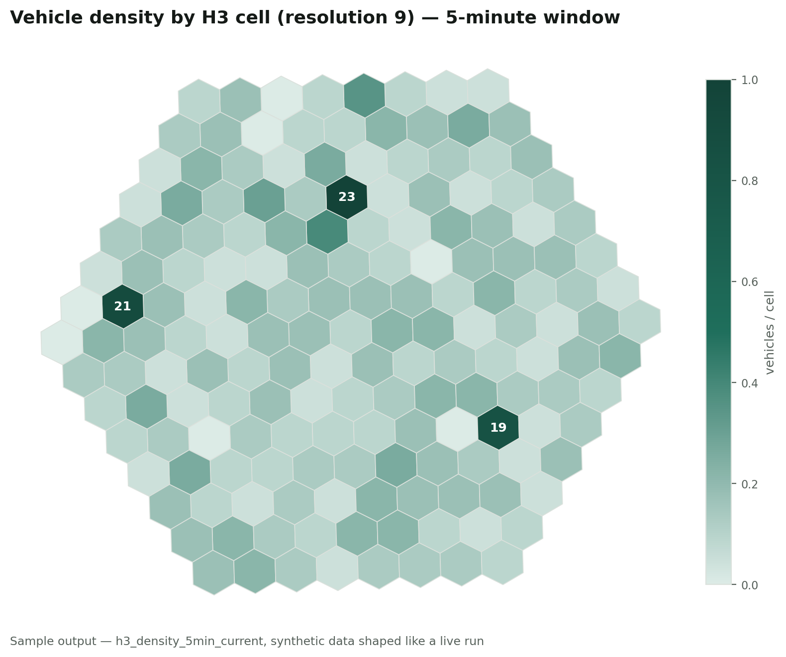
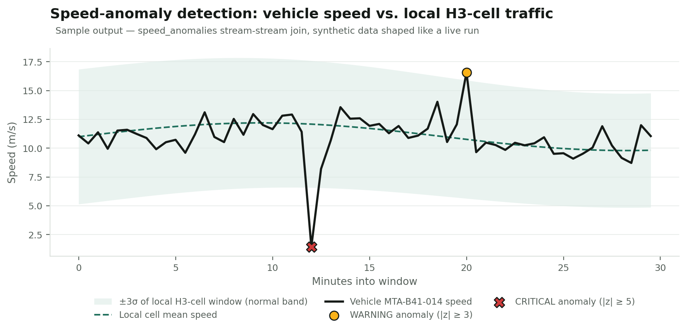

Data Engineer with a mathematics foundation — turning raw, unproven data into pipelines that run in production. Currently building data infrastructure at Exponential Science; previously at DLT Science Foundation.
Dewi Rizki Fitriani is a Data Engineer based in Indonesia, working at the intersection of production data infrastructure and quantitative analysis. Since 2023 she has designed and maintained ETL pipelines across AWS (S3, Lambda, EC2, Athena, RDS) and Databricks, moving raw multi-source data into PostgreSQL and TimescaleDB for downstream analysis. At Exponential Science, she works with blockchain researchers to move a proof-of-concept into a production pipeline supporting a stablecoin project tied to a financial index — fetching, transforming, feature-extracting, and loading data end to end.
Her Mathematics degree (UIN Syarif Hidayatullah) isn't a side note: as a student she led a team to a national Top-10 finish (of 187) applying K-Means clustering and correlation analysis to COVID-19 policy data, and wrote her thesis on Random Forest–based spam detection. That statistical grounding — validate before you ship — is what she brings to every pipeline she builds.
Grouped by what's actually demonstrated in production work and named projects.
Four projects that best represent production pipeline work and the quantitative habit behind it. Full write-ups below.
Moving a blockchain research proof-of-concept into a production pipeline for a stablecoin financial index.
End-to-end ETL on AWS + Databricks — ingestion, transformation, orchestration, and monitoring.
Correlation and K-Means clustering on COVID-19 policy data — a national finalist analysis.
Real-time IoT fleet telemetry: live GPS → Kafka → PySpark/Flink → H3 spatial indexing → ClickHouse, queryable in under 30 seconds.
The two roles where I own a pipeline end to end — from raw source to production database.
Where the Mathematics background shows up directly — correlation, clustering, and classification applied to real data.
A self-directed build applying the streaming and quantitative background above to a production-shaped real-time system: live vehicle GPS ingested from public transit/TLC feeds, indexed spatially, and served with sub-30-second latency. Structured as a Poetry monorepo with an independent, reviewable service per stage. Full source, PRD, and architecture docs are in the fleet-telematics-platform directory of this repo.
VehiclePosition feeds and NYC TLC trip records) into one canonical event schema published to Kafka/Redpanda. A PySpark Structured Streaming job (with a parallel PyFlink reference implementation) H3-indexes every event at resolution 9 (block-level) and its resolution-8 parent, computes 5-minute/1-minute-slide windowed density per cell, then runs a watermarked stream-stream join back onto the raw stream so each event is scored against its own local cell's current mean/stddev — flagging speed anomalies by z-score rather than a global threshold.ORDER BY h3_r8, h3_r9, event_time) so a viewport+time query reads one contiguous range; a ReplacingMergeTree density rollup fed directly by Spark's foreachBatch; native H3 functions (h3kRing, h3ToParent) doing ring/neighbor expansion at query time only, since indexing was already done once at write time.
h3_density_5min_current.
Illustrative captures generated from data shaped like a live run (scripts/generate_sample_visualizations.py) — the interactive versions are the Streamlit dashboard and Grafana boards in the repo.
A system view of the two production pipelines above, not just a tool list.
Selected coursework: Data Mining project on the influence of unemployment rate on economic growth using ARIMA analysis; Artificial Intelligence project on hate speech detection using Support Vector Machine.
Cross-university, cross-discipline capstone team; built the cloud/backend layer of Tanamify, a prototype application for plant enthusiasts, on Python, PostgreSQL, Google Cloud Platform, and Spring Boot.